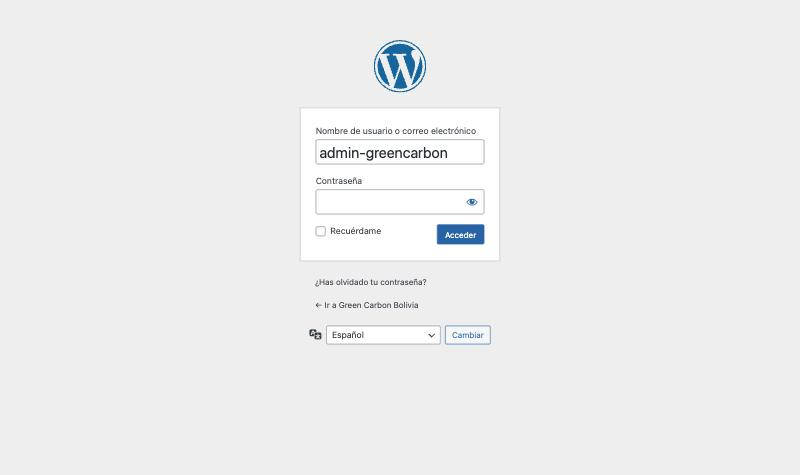
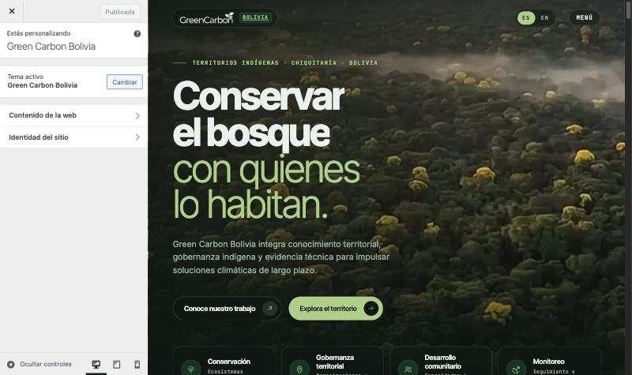
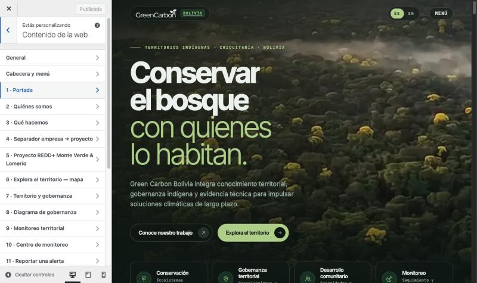
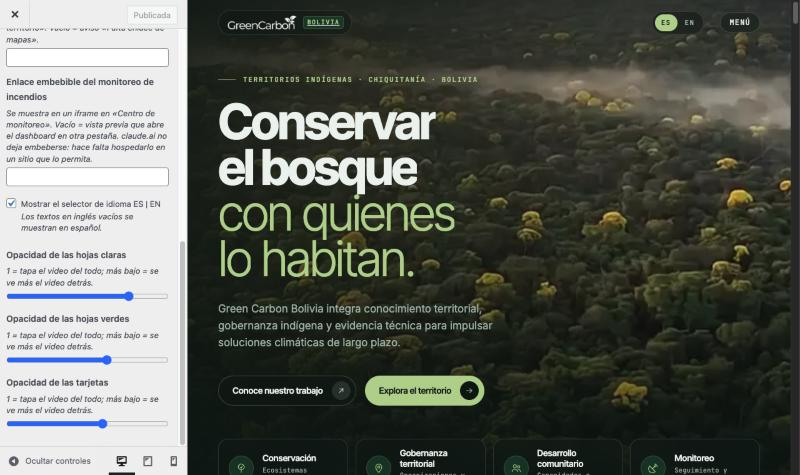

Guía técnica y de uso: acceso al administrador, qué se puede editar, cómo está hecho el tema, instalación del contenedor y lista de lo que falta completar antes de publicar.
El sitio de una sola página de Green Carbon Bolivia, con el recorrido en video que avanza con el scroll, convertido en un tema de WordPress. Todo el contenido (textos en español e inglés, fotos, enlaces, datos de contacto y avisos pendientes) se edita desde un único administrador, con vista previa en vivo. Viene empaquetado en un contenedor Docker que instala todo solo.
| Archivo / carpeta | Para qué sirve |
|---|---|
LEEME.md | Resumen técnico (este PDF lo amplía). |
docker-compose.yml, Dockerfile | Definen los dos contenedores: WordPress (con el tema adentro) y la base de datos. |
.env.ejemplo | Plantilla de configuración: contraseñas, usuario admin, URL y puerto. Se copia a .env. |
docker/ | Script de arranque e instalación automática (instalar.sh). |
tema/greencarbon/ | El tema de WordPress listo para usar (≈ 250 MB por el video y los cuadros). |
herramientas/ | Generador del tema (convertir.py), traducción al inglés (traduccion-en.json) y scripts del video. |
greencarbon-wordpress-1.2.2-amd64.tar.gz | Imagen Docker ya construida para servidores x86 (adjunta al Release, no está en el repo). |
Pensado para alguien con conocimientos básicos. Se hace una sola vez; tarda unos 5 minutos más la descarga.
Descargar y descomprimir el «Source code (zip)» del Release v1.2.2. Queda una carpeta greencarbon-wordpress-1.2.2. Abrir una terminal dentro de esa carpeta.
Crear el archivo de configuración copiando la plantilla:
cp .env.ejemplo .env # en Windows (PowerShell): copy .env.ejemplo .envEditar .env con cualquier editor de texto y cambiar como mínimo las dos contraseñas:
| Variable | Qué poner |
|---|---|
DB_PASSWORD | Contraseña de la base de datos. Larga y aleatoria; nadie la escribe a mano. |
GC_ADMIN_USER | Usuario del administrador. Por defecto admin-greencarbon. |
GC_ADMIN_PASSWORD | Contraseña del administrador (mínimo 12 caracteres). |
GC_ADMIN_EMAIL | Correo del administrador (para recuperar la contraseña). |
GC_URL | Dirección del sitio. En local: http://localhost:8080. En producción: https://dominio. |
GC_PUERTO | Puerto de la máquina donde se publica (por defecto 8080). Debe coincidir con el de GC_URL en local. |
GC_INDEXAR | 0 = los buscadores no indexan (pruebas). 1 = producción. |
Levantar los contenedores (la primera vez construye la imagen, 1–3 minutos):
docker compose up -d --build
Esperar el mensaje «Listo». El servidor web arranca recién cuando terminó la instalación:
docker compose logs -f wordpress # salir con Ctrl+C
[gc-instalar] Listo: http://localhost:8080/wp-admin (usuario admin-greencarbon).Abrir el sitio en http://localhost:8080 y el administrador en http://localhost:8080/wp-admin.
Evita el paso de construcción. Descargar greencarbon-wordpress-1.2.2-amd64.tar.gz del Release y ponerlo en la misma carpeta:
docker load -i greencarbon-wordpress-1.2.2-amd64.tar.gz docker tag greencarbon-wordpress:1.2.2-amd64 greencarbon-wordpress:1.2.2 docker compose up -d --no-build
| Comando | Qué hace |
|---|---|
docker compose ps | Ver si están corriendo. |
docker compose stop / start | Detener / volver a arrancar sin perder nada. |
docker compose logs -f wordpress | Ver el registro del servidor. |
docker compose up -d --build | Aplicar una versión nueva del tema (no borra contenido). |
docker compose down | Apagar y quitar contenedores (el contenido queda en los volúmenes). |
docker compose down -v | Borra todo, incluido el contenido cargado. Solo para empezar de cero. |

| Dato | Valor |
|---|---|
| Dirección | GC_URL + /wp-admin(local: http://localhost:8080/wp-admin) |
| Usuario | El de GC_ADMIN_USER en .env. Por defecto admin-greencarbon. |
| Contraseña | La de GC_ADMIN_PASSWORD en .env. |
| Rol | Administrador (único usuario). |
.env.ejemplo, con valores cambiar-esto. Cada instalación define sus propias contraseñas en .env, y ese archivo nunca se sube a Git. La instalación de prueba de Álvaro tiene las suyas en su .env local: si se necesitan, pedirlas por un canal privado, nunca por correo abierto.Las credenciales del .env se usan solo en la primera instalación. Después, cambiar la contraseña en el .env no cambia la del sitio. Para cambiarla:
docker compose exec wordpress wp --allow-root user update admin-greencarbon --user_pass='NuevaClaveSegura'
Al entrar, el contenido está en Apariencia → Personalizar → Contenido de la web. También se llega desde el escritorio del admin.

El panel Contenido de la web tiene 21 secciones en el mismo orden que la página y 354 campos. Cada cambio se ve al instante en la vista previa, pero no se publica hasta pulsar «Publicar», arriba a la izquierda. También se puede guardar como borrador o programar.

| Tipo de contenido | Cómo se edita |
|---|---|
| Textos (títulos, párrafos, botones, menú, pie, formulario) | Campo de texto. Se permiten <em>, <strong>, <b>, <br> y <a href>; el resto se elimina por seguridad. Los títulos con una parte en verde están divididos en dos campos («Título» y «Resaltado»). |
| Inglés | Campo «EN ·» debajo de cada texto. Si se deja vacío, en inglés se muestra el español. La versión en inglés se ve en ?lang=en o con el botón ES | EN de la cabecera. |
| Fotos | Botón «Cambiar imagen»: se sube a la Biblioteca de medios o se elige una existente. Cada foto tiene además su texto alternativo (ES/EN) para accesibilidad. |
| Retratos y foto de especie | Huecos de imagen. Vacíos muestran la silueta o el aviso «Falta». |
| Avisos «Falta» / «SSOT» | Cada aviso naranja o amarillo tiene su campo. Al escribir el dato real, el aviso desaparece y se muestra el dato. Vacío = vuelve el aviso. |
| Enlaces externos | Redes sociales, Verra, destino del formulario: campo URL. |
| Mapa del proyecto | Imagen estática (a pedido del cliente): sección 6 → «Imagen estática del mapa del proyecto». Se exporta el mapa de las TCO desde Global Nature Watch (horizontal, mínimo 1600 px de ancho) y se sube aquí. Lleva el crédito «Fuente: Global Nature Watch». Vacía = aviso «Falta imagen del mapa». |
| Centro de Operaciones de Incendios | Imagen estática (a pedido del cliente), sin enlace a claude.ai, con la leyenda «Imagen ilustrativa». La imagen se cambia en la sección 10. |
| General | Título de la pestaña y descripción para buscadores (ES/EN), selector de idioma, opacidades y dos enlaces opcionales para más adelante: mapas y monitoreo de incendios. Si se completan, reemplazan la imagen estática por la página en un iframe; el sitio enlazado tiene que permitir ser embebido en el dominio. |
| Opacidad de hojas y tarjetas | Tres deslizadores (hojas claras, hojas verdes, tarjetas): 1 tapa el video; más bajo deja ver el recorrido detrás. |
| Mensajes de la página | Textos que escribe el JavaScript: MENÚ/CERRAR, «Cargando el territorio», mensajes del formulario (ES/EN). |
| «Del bosque a los datos» | Casilla en la sección 9 para mostrarla (oculta hasta la certificación, aprox. marzo 2027). Ver sección 11: al activarla, desarrollo tiene que ajustar las anclas del video. |

| Elemento | Por qué / cómo se cambia |
|---|---|
| El recorrido en video | Computadora: video/recorrido-1080p60.mp4 (1080p, 60 fps, 75 MB). Celular: cuadros WebP en pack/v (540×960, 48 fps, 102 MB en 8 paquetes de grueso a fino). Respaldo: pack/h (24 fps). Se generan con los scripts de herramientas/video/. Si se reemplazan, hay que subir VERSION en js/main.js: los archivos se llaman igual y el navegador los guarda en caché. |
Anclas data-cuadro | Atan cada sección a un cuadro del video. Están en el HTML fuente. |
| Diseño, íconos y orden de secciones | style.css e index.php, generados desde el HTML original. |
| Cantidad de elementos | Hay 5 testimonios, 4 cifras de impacto, 1 especie y 5 piezas en «Comunidades en acción». Para agregar o quitar elementos hay que tocar el HTML fuente y regenerar. |
DISALLOW_FILE_EDIT) y la barra de administración se oculta en el frente, porque tapa la cabecera fija.El sitio original es un único index.html (HTML + CSS + JS). En vez de reescribirlo a mano, un generador lo convierte en tema. Así el diseño queda idéntico, y cualquier cambio de diseño se sigue haciendo en un solo archivo.
| Archivo del tema | Qué contiene |
|---|---|
index.php | La página entera. Cada texto es una llamada como gc_t("s01_02"). Generado: no editar a mano. |
inc/campos.json | Definición de los 354 campos: sección, tipo, etiqueta, valor predeterminado (ES) y traducción (EN). |
functions.php | Registra el Personalizador a partir de campos.json, funciones de salida con escape (gc_t, gc_a, gc_u, gc_aviso…), idioma, opacidades y carga de CSS/JS. |
style.css / js/main.js | CSS y JS del original. El JS recibe window.GC con la ruta del tema, los enlaces y los textos traducidos. |
assets/, video/, pack/ | Fotos, íconos, MP4 y paquetes de cuadros. |
Español por defecto; inglés con ?lang=en. Cada campo de texto clave tiene un gemelo clave_en. gc_valor() elige según el idioma y, si el inglés está vacío, usa el español. La página emite <html lang> correcto y <link rel="alternate" hreflang>.
En computadora el scroll mueve currentTime del MP4: se descarga entero a un blob local para que los saltos sean instantáneos (mediana medida: 6,6 ms por salto). En celular se dibujan cuadros WebP en un canvas, con fundido entre cuadros vecinos. Las anclas están en cuadros de 24 por segundo. El manifest.json de cada paquete declara sus fps y el JS hace la conversión. Los 60 y 48 fps se obtuvieron interpolando (ffmpeg minterpolate).
python3 herramientas/convertir.py ../greencarbon-web tema/greencarbon docker compose up -d --build
s05_03…) son posicionales: agregar o quitar un texto en una sección corre las claves siguientes de esa sección, y el contenido ya cargado en esos campos queda desfasado. Después de un cambio de estructura hay que revisar esa sección en el panel. El generador verifica solo que, con los valores predeterminados, el texto visible sea idéntico al del HTML original.Si el hosting ya tiene WordPress (6.4 o superior, PHP 8.1 o superior):
tema/greencarbon completa a wp-content/themes/ por SFTP o el administrador de archivos del hosting. Pesa unos 250 MB: el subidor de temas del admin no lo acepta por tamaño.php.ini o el panel del hosting) para poder cargar fotos grandes.define('DISALLOW_FILE_EDIT', true); en wp-config.php..mp4 con Accept-Ranges (lo normal en Apache y Nginx) y no comprimir los .bin de pack/ al vuelo (ya están comprimidos).docker-compose.yml "${GC_PUERTO}:80" por "127.0.0.1:${GC_PUERTO}:80".GC_URL con https://dominio antes de la primera instalación. Si se instaló con otra URL:
docker compose exec wordpress wp --allow-root search-replace 'http://localhost:8080' 'https://dominio'
GC_INDEXAR=1 cuando el cliente apruebe publicar, y docker compose up -d..env. Las variables se ven con docker inspect: en servidores compartidos conviene usar secretos del orquestador.Hay dos volúmenes que respaldar: db (base de datos: todo el contenido del panel) y uploads (fotos subidas).
# Respaldo de la base docker compose exec db sh -c 'mariadb-dump -u greencarbon -p"$MARIADB_PASSWORD" greencarbon' > respaldo-$(date +%F).sql # Respaldo de las fotos subidas docker compose cp wordpress:/var/www/html/wp-content/uploads ./uploads-$(date +%F) # Restaurar la base docker compose exec -T db sh -c 'mariadb -u greencarbon -p"$MARIADB_PASSWORD" greencarbon' < respaldo-AAAA-MM-DD.sql
Con una versión nueva del repositorio: docker compose up -d --build. Al arrancar, el contenedor copia el tema nuevo y conserva el contenido.
Las actualizaciones menores de seguridad se aplican solas. Para una versión mayor, se puede actualizar desde el admin (queda en el volumen) o cambiar la versión en la primera línea del Dockerfile y reconstruir. Hay que hacer un respaldo antes.
| Síntoma | Solución |
|---|---|
| «port is already allocated» | El puerto está en uso: cambiar GC_PUERTO (y el puerto de GC_URL) en .env. |
| «falta GC_ADMIN_PASSWORD / GC_URL en .env» | No se creó .env o falta esa línea (paso 2 y 3). |
El sitio no abre después de up | Todavía está instalando: docker compose logs -f wordpress hasta ver «Listo». |
| Redirige a otra dirección | GC_URL distinto del real: usar search-replace (sección 08). |
| Olvidé la contraseña | Comando wp user update de la sección 03. |
| Cambié el video y se ve el viejo | Subir VERSION en js/main.js (caché del navegador). |
| El video se ve a saltos en una pestaña de fondo | Normal: el navegador frena las animaciones de pestañas que no se ven. Probar con la pestaña en primer plano. |
Lista explícita de lo que falta para publicar. Obligatorio = antes de salir a producción. Cliente = lo entrega Green Carbon y se carga en el panel. Desarrollo = tarea técnica. Opcional.
| Tipo | Qué | Dónde | |
|---|---|---|---|
| ☐ | Oblig. | Contraseñas propias de base de datos y administrador | .env antes de instalar |
| ☐ | Oblig. | Dominio real en GC_URL y HTTPS delante del contenedor | .env + proxy (sección 08) |
| ☐ | Oblig. | Correo real del administrador | GC_ADMIN_EMAIL o Usuarios → Perfil |
| ☐ | Oblig. | Permitir buscadores cuando se apruebe (GC_INDEXAR=1) | .env |
| ☐ | Oblig. | Verificar el destino del formulario de contacto. Hoy apunta a submit-form.com/zAQqp9upk: confirmar que los mensajes llegan al correo del cliente o cambiarlo | Panel → 18 · Contacto → «Destino del formulario» |
| ☐ | Desarr. | Programar respaldos de db y uploads | Sección 09 |
| Tipo | Qué | Panel → sección | |
|---|---|---|---|
| ☐ | Oblig. | Aprobar o corregir la traducción al inglés. Es un borrador automático y revisado, no aprobado. Si no se aprueba a tiempo, desactivar el selector ES | EN | Cada sección (campos EN) · General → selector |
| ☐ | Oblig. | Dirección, correo y teléfono (contacto y pie) | 18 · Contacto · Pie de página |
| ☐ | Oblig. | Texto de privacidad del consentimiento del formulario | 18 · Contacto |
| ☐ | Oblig. | Validar cifras marcadas SSOT: superficie (1.133.035 ha, «más de un millón de hectáreas»), 82 comunidades | 4 · Separador · 5 · Proyecto |
| ☐ | Cliente | Ficha de cada territorio: superficie, comunidades, cobertura forestal, organización territorial | 6 · Explora el territorio |
| ☐ | Cliente | Imagen del mapa de las TCO exportada de Global Nature Watch (el enlace público de GNW no dibuja el área sin iniciar sesión, así que la imagen la exporta alguien con la cuenta de Green Carbon en GNW) | 6 · Explora el territorio → Imagen estática del mapa |
| ☐ | Cliente | Centro de Operaciones de Incendios en vivo (más adelante): publicar el dashboard fuera de claude.ai, en una URL que permita embeberlo en el dominio, y pegarla en el panel. Mientras tanto se muestra la imagen estática | General → Enlace de monitoreo de incendios |
| ☐ | Cliente | Foto de Lomerío (hoy se usa una foto de reunión con aviso) | 7 · Territorio y gobernanza |
| ☐ | Cliente | 5 testimonios: retrato, nombre, comunidad y rol, cita, con consentimiento firmado | 12 · Voces del territorio |
| ☐ | Cliente | 4 cifras de impacto respaldadas y su período (hoy «XX») | 13 · Impacto |
| ☐ | Cliente | Especie con evidencia territorial: foto, nombre común, nombre científico, descripción | 14 · Biodiversidad |
| ☐ | Cliente | Enlace a los datos de monitoreo del proyecto (para cuando se muestre «Del bosque a los datos») | 9 · Monitoreo territorial |
| ☐ | Cliente | Noticia: titular, responsable editorial y frecuencia | 17 · Comunidades en acción |
| ☐ | Cliente | Destino del Canal de Integridad (separado del contacto) | 18 · Contacto |
| ☐ | Cliente | Flujo interno y privacidad para activar «Reportar una alerta» | 11 · Reportar una alerta |
| Tipo | Qué | |
|---|---|---|
| ☐ | Desarr. | Botón «Reportar una alerta»: hoy está deshabilitado. Hace falta un formulario o destino una vez que el cliente defina el flujo. |
| ☐ | Desarr. | Adjunto del formulario: deshabilitado. Requiere un servicio de formularios que acepte archivos. |
| ☐ | Desarr. | Activar «Del bosque a los datos» (aprox. marzo 2027). Además de la casilla del panel, hay que rehacer las anclas data-cuadro de #monitoreo a #impacto en el HTML fuente para que la escena del dron no quede cortada, y regenerar. |
| ☐ | Desarr. | Botones «Ver historia» (testimonios) y «Siguiente especie»: hoy deshabilitados, sin destino. |
| ☐ | Opcional | Volver a generar el video desde los clips originales de Flow, que no están en el repo. Los 60/48 fps actuales son interpolados de las versiones de 30/24, y una escena rápida puede mostrar algún artefacto leve. |
| ☐ | Opcional | Si el cliente quiere más de 5 testimonios, 4 cifras o 1 especie: ampliar en el HTML fuente y regenerar. |